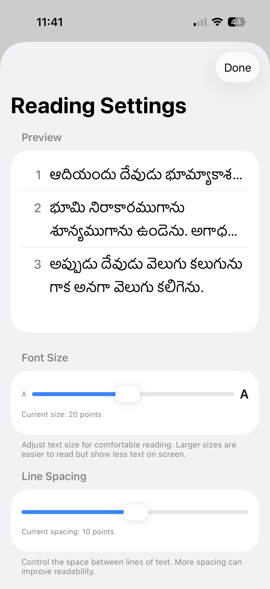
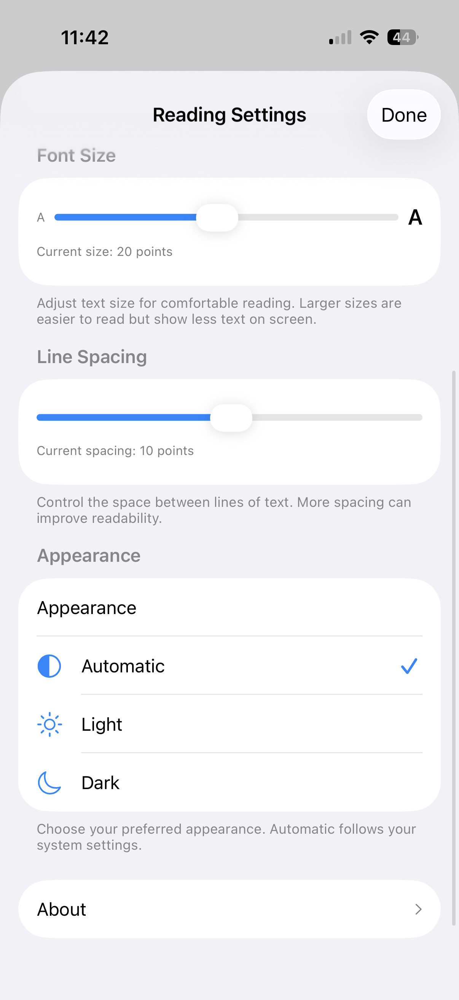

The Problem
My grandmother couldn't navigate existing Bible apps. Small text, confusing menus, and zero Telugu voice support made it impossible for her to use them independently.
The Solution
I built a voice-navigated Bible app specifically designed for elderly Telugu-speaking users. The entire project took 1 week, and I'm currently building in public—sharing progress via reels on Instagram, YouTube Shorts, and X.
Key Features
AI Voice Navigation
- Conversational Telugu commands: "మత్తయి మూడు పన్నెండు" navigates to Matthew 3:12
- Powered by Gemini AI with extensive prompt engineering (300+ lines)
- Handles corrections, incomplete requests, and validates against actual Bible structure
- Supports Telugu, English, and mixed-language input
Elderly-Optimized UX
- Adaptive typography: 14-28pt font size with live preview
- Adjustable line spacing: 4-16pt for comfortable reading
- Large touch targets and high-contrast verse numbers
- Auto-saves reading position—picks up exactly where you left off
Cross-Platform
- Native iOS (SwiftUI) and Android (Jetpack Compose)
- Feature parity across both platforms
- Identical UX patterns for consistency
Screenshots




Technical Highlights
- Efficient parsing: First chapter loads instantly, rest loads in background
- USFM format for Bible text ensures data consistency
- Verse-level highlighting with visual feedback when navigation completes
- Smart TTS formatting separates display text from speech text
Building in Public
I'm documenting the entire journey—from design decisions to code challenges—through short-form video content. This app started as a personal project to help my grandmother, but it's become a case study in designing for accessibility and non-English-speaking users.